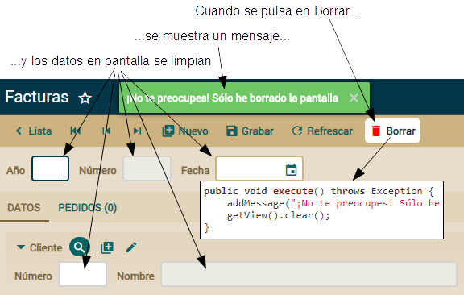
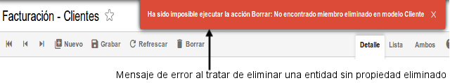
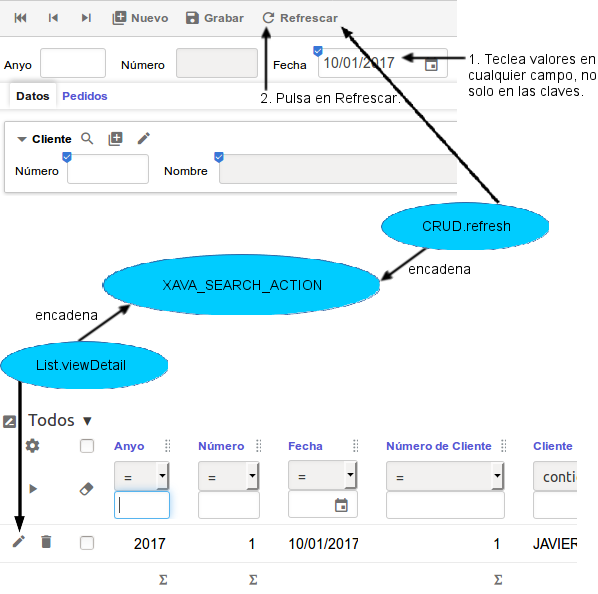

Table of Contents
Lección 7: Refinar el comportamiento predefinido
Espero que estés muy contento con el código de tu aplicación Facturacion. Es realmente simple, básicamente tienes entidades, clases simples que modelan tu problema. Toda la lógica de negocio está en esas entidades, y OpenXava genera una aplicación con un comportamiento decente a partir de ellas.No solo de lógica de negocio vive el hombre. Un buen comportamiento también es importante. Seguramente, te habrás encontrado con que o bien tú o bien tu usuario queréis un comportamiento diferente al estándar de OpenXava, al menos para ciertas partes de tu aplicación. Refinar el comportamiento predefinido a veces es necesario si quieres que tu usuario esté cómodo.
El comportamiento de la aplicación viene dado por los controladores. Un controlador es una colección de acciones. Una acción contiene el código a ejecutar cuando el usuario pulsa en un vínculo o botón. Puedes definir tus propios controladores y acciones y asociarlos a tus módulos o entidades, de esta forma refinas la forma en que OpenXava se comporta.
En esta lección refinaremos los controladores y acciones estándar para poder personalizar el comportamiento de tu aplicación Facturacion.
Acciones personalizadas
Por defecto, un módulo OpenXava te permite manejar tu entidad de una forma bastante buena: es posible añadir, modificar, borrar, buscar, generar informes PDF, exportar a Excel (CSV) e importar datos a las entidades. Estas acciones por defecto están contenidas en el controlador Typical. Puedes refinar o extender el comportamiento de tu módulo definiendo tu propio controlador. Esta sección te enseñará como definir tu propio controlador y escribir tus acciones personalizadas.Controlador Typical
Por defecto el módulo Factura usa las acciones del controlador Typical. El controlador Typical está definido en default-controllers.xml que se encuentra en la carpeta OpenXava/xava de tu workspace. Una definición de controlador es un fragmento de XML con una lista de acciones. OpenXava aplica por defecto el controlador Typical a todos los módulos. Puedes ver su definición:<controller name="Typical"> <!-- 'Typical' hereda sus acciones de los controladores --> <extends controller="Navigation"/> <!-- 'Navigation', --> <extends controller="CRUD"/> <!-- 'CRUD' --> <extends controller="Print"/> <!-- 'Print' --> <extends controller="ImportData"/> <!-- e 'ImportData' --> </controller>Aquí puedes ver como se puede definir un controlador a partir de otros controladores. Este es un uso sencillo de la herencia. En este caso el controlador Typical tiene todas las acciones de los controladores Navigation, Print, CRUD e ImportData. Navigation tiene las acciones para navegar por los registros en modo detalle. Print tiene las acciones para imprimir informes PDF y exportar a Excel, CRUD tiene las acciones para crear, leer, actualizar y borrar, e ImportData tiene la acción que permite cargar un archivo, con formato de tabla (csv, xls, xlsx), para importar registros al módulo. El siguiente código muestra un extracto del controlador CRUD:
<controller name="CRUD"> <action name="new" class="org.openxava.actions.NewAction" image="images/new.gif" icon="library-plus" keystroke="Control N"> <!-- name="new": Nombre para referenciar la acción desde otras partes class="org.openxava.actions.NewAction" : La clase con la lógica de la acción image="images/new.gif": Imagen a mostrar para esta acción, en caso "useIconsInsteadOfImages=false" de "xava.properties" icon="library-plus": Icono a mostrar para esta acción, ésta es por defecto keystroke="Control N": Teclas que se pueden pulsar para ejecutar la acción --> <set property="restoreModel" value="true"/> <!-- La propiedad restoreModel de la acción se pondrá a true antes de ejecutarla --> </action> <action name="save" mode="detail" by-default="if-possible" class="org.openxava.actions.SaveAction" image="save.gif" icon="content-save" keystroke="Control S"/> <!-- mode="detail": Esta acción se mostrará solo en modo detalle by-default=”if-possible”: Esta acción se ejecutará cuando el usuario pulse INTRO --> <action name="delete" mode="detail" confirm="true" class="org.openxava.actions.DeleteAction" image="delete.gif" icon="delete" available-on-new="false" keystroke="Control D"/> <!-- confirm="true" : Pide confirmación al usuario antes de ejecutar la acción available-on-new="false" : La acción no estará disponible mientras se crea una nueva entidad --> <!-- Otras acciones... --> </controller>Aquí se ve como definir las acciones. Básicamente consiste en vincular un nombre con una clase con la lógica a ejecutar. Además, define un icono y un atajo de teclado. También vemos como se puede configurar la acción usando <set />.
Las acciones se muestran por defecto en modo lista y detalle, aunque puedes, por medio del atributo mode, especificar que sea mostrada solo en modo lista (list) o detalle (detail).
Refinar el controlador para un módulo
Empezaremos refinando la acción para borrar del módulo Factura. Nuestro objetivo es que cuando el usuario pulse en el botón de borrar, la factura no sea borrada de la base de datos, sino que simplemente se marque como borrada. De esta forma, podemos recuperar las facturas borradas si fuese necesario.
La figura anterior muestra las acciones de Typical; queremos todas estas acciones en nuestro módulo Factura, con la excepción de que vamos a escribir nuestra propia lógica para la acción de borrar.
Para definir tu propio controlador para Factura has de escribir el siguiente código en tu archivo controladores.xml de la carpeta xava de tu proyecto:
<?xml version = "1.0" encoding = "ISO-8859-1"?> <!DOCTYPE controladores SYSTEM "dtds/controladores.dtd"> <controladores> <controlador nombre="Factura"> <!-- El mismo nombre de la entidad--> <hereda-de controlador="Typical"/> <!-- Hereda todas las acciones de 'Typical' --> <!-- Typical ya tiene una acción 'delete', al usar el mismo nombre la sobrescribimos --> <accion nombre="delete" modo="detail" confirmar="true" clase="org.openxava.facturacion.acciones.EliminarFactura" icono="delete" disponible-en-nuevo="false" atajo-de-teclado="Control D"/> </controlador> </controladores>Para definir un controlador para tu entidad, has de crear un controlador con el mismo nombre que la entidad. Es decir, si existe un controlador llamado “Factura”, cuando ejecutes el módulo Factura éste será el controlador a usar en vez de Typical.
Extendemos el controlador Factura de Typical, así todas las acciones de Typical están disponible en tu módulo Factura. Cualquier acción que definas en tu controlador Factura estará disponible como un botón para que el usuario pueda pulsarlo. Aunque en este caso hemos llamado a nuestra acción “delete”, precisamente el nombre de una acción del controlador Typical, de esta forma estamos anulando la acción de Typical. Es decir, solo una acción delete se mostrará al usuario y será la nuestra.
Escribir tu propia acción
Escribamos la primera versión de nuestra acción delete:package org.openxava.facturacion.acciones; // En el paquete 'acciones' import org.openxava.actions.*; import org.openxava.jpa.*; import org.openxava.facturacion.modelo.*; public class EliminarFactura extends ViewBaseAction { // ViewBaseAction tiene getView(), addMessage(), etc public void execute() throws Exception { // La lógica de la acción addMessage( // Añade un mensaje para mostrar al usuario "¡No te preocupes! Sólo he borrado la pantalla"); getView().clear(); // getView() devuelve el objeto xava_view // clear() borra los datos en la interfaz de usuario } }Una acción es una clase simple. Tiene un método execute() con la lógica a hacer cuando el usuario pulse en el botón o vínculo correspondiente. Una acción ha de implementar la interfaz org.openxava.actions.IAction, aunque normalmente es más práctico extender de BaseAction, ViewBaseAction o cualquier otra acción base del paquete org.openxava.actions.
ViewBaseAction tiene una propiedad view que puedes usar desde dentro de execute() mediante getView(). Este objeto del tipo org.openxava.view.View permite manejar la interfaz de usuario, en este caso borramos los datos visualizados usando getView().clear().
También usamos addMessage(). Todos los mensajes añadidos con addMessage() se mostrarán al usuario al final de la ejecución de la acción. Puedes, bien añadir el mensaje a mostrar, o bien un id de una entrada en i18n/MensajesFacturacion_es.properties.
La siguiente imagen muestra el comportamiento del módulo Factura después de añadir la acción de borrar personalizada.

Por supuesto, este es un comportamiento tonto. Añadamos el comportamiento real.
Para marcar como borrada la factura actual sin borrarla realmente, necesitamos añadir una nueva propiedad a Factura. Llamémosla eliminado:
public class Factura extends DocumentoComercial { @Hidden // No se mostrará por defecto en las vistas y los tabs @Column(columnDefinition="boolean default false") // Para llenar con falses en lugar de con nulos private boolean eliminado; public boolean isEliminado() { return eliminado; } public void setEliminado(boolean eliminado) { this.eliminado = eliminado; } }Como ves, es una propiedad booleana simple y llana. El único detalle es el uso de la anotación @Hidden. Indica que cuando una vista o lista tabular por defecto sea generada la propiedad eliminado no se mostrará; aunque si la pones explícitamente en @View(members=) o @Tab(properties=) sí que se mostrará. Usa esta anotación para marcar aquellas propiedades de uso interno del programador pero que no tienen sentido para el usuario final.
Usamos @Column(columnDefinition=) para llenar la columna con falses en lugar de con nulos. Aquí puedes poner definición SQL de la columna para enviar a la base de datos. Es más sencillo que actualizar la base de datos pero el código es más dependiente de la base de datos.
Ya estamos preparados para escribir el código real de la acción:
public void execute() throws Exception { Factura factura = XPersistence.getManager().find( Factura.class, getView().getValue("oid")); // Leemos el id de la vista factura.setEliminado(true); // Modificamos el estado de la entidad addMessage("object_deleted", "Factura"); // El mensaje de confirmación de borrado getView().clear(); // Borramos la vista }El efecto visual es el mismo, se ve un mensaje y la vista se borra, pero en este caso hacemos algo de lógica. Buscamos la entidad Factura asociada con la vista actual y entonces cambiamos el valor de su propiedad eliminado. No necesitas hacer nada más, porque OpenXava confirma automáticamente la transacción JPA. Es decir, puedes leer cualquier objeto y modificar su estado en una acción, y cuando la acción finalice los cambios se almacenarán en la base de datos.
Pero hemos dejado algunos cabos sueltos. El botón de "borrar" sigue en la vista después de haber borrado la entidad, es decir, cuando no hay un objeto seleccionado, además si el usuario lo pulsa la instrucción para buscar fallará y un mensaje un tanto técnico e ininteligible se le mostrará a nuestro desamparado usuario. Podemos refinar este caso no mostrando el botón, tal como cuando pulsamos el botón "nuevo". Observa la ligera modificación al método execute():
public void execute() throws Exception { // ... getView().clear(); getView().setKeyEditable(true); // Crearemos una nueva entidad }Con getView().setKeyEditable(true) indicamos que creamos una nueva entidad y como nuestra acción delete tiene el atributo disponible-en-nuevo="false", entonces, el botón de borrar no se mostrará.
Ahora que ya sabes como escribir tus propias acciones personalizadas, es tiempo de aprender como escribir código genérico.
Acciones genéricas
El código actual de EliminarFactura refleja la forma típica de escribir acciones. Es código concreto que accede directamente a entidades concretas para manipularlas.Pero a veces puedes encontrarte alguna lógica en tu acción susceptible de ser usada y reusada por toda tu aplicación, incluso en todas tus aplicaciones. En este caso, puedes utilizar algunas técnicas para crear código más reutilizable, y así convertir tus acciones personalizadas en acciones genéricas.
Aprendamos estas técnicas para escribir código más genérico en nuestras acciones.
Código genérico con MapFacade
Imagínate que quieres usar tu EliminarFactura también para pedidos. Es más, imagínate que quieres usarla para cualquier entidad de la aplicación con una propiedad eliminado. Es decir, quieres una acción para marcar como borrada, en lugar de borrarla de la base de datos, no solo facturas sino cualquier entidad. En este caso, el código actual de tu acción no es suficiente. Necesitas un código más genérico.Puedes conseguir una acción más genérica usando la clase de OpenXava llamada MapFacade. MapFacade (del paquete org.openxava.model) te permite manejar el estado de tus entidades usando mapas, esto es conveniente ya que View trabaja con mapas. Además, los mapas son más dinámicos que los objetos y por tanto más apropiados para crear código genérico.
Reescribamos nuestra acción para borrar. Primero, renombremos EliminarFactura (una acción para borrar objetos de tipo Factura) como EliminarParaFacturacion (la acción para borrar objetos en la aplicación Facturacion). Esto implica que tienes que cambiar la entrada para la acción en controladores.xml, para cambiar el nombre de la clase. Tal como se muestra a continuación:
<accion nombre="delete" modo="detail" confirmar="true" clase="org.openxava.facturacion.acciones.EliminarParaFacturacion" icono="delete" disponible-en-nuevo="false" atajo-de-teclado="Control D"/>Ahora, renombra tu EliminarFactura como EliminarParaFacturacion y reescribe su código:
package org.openxava.facturacion.acciones; import java.util.*; import org.openxava.actions.*; import org.openxava.model.*; public class EliminarParaFacturacion extends ViewBaseAction { public void execute() throws Exception { Map<String, Object> valores = new HashMap<String, Object>(); // Los valores a modificar en la entidad valores.put("eliminado", true); // Asignamos true a la propiedad 'eliminado' MapFacade.setValues( // Modifica los valores de la entidad indicada getModelName(), // Un método de ViewBaseAction getView().getKeyValues(), // La clave de la entidad a modificar valores); // Los valores a cambiar resetDescriptionsCache(); // Reinicia los caches para los combos addMessage("object_deleted", getModelName()); getView().clear(); getView().setKeyEditable(true); getView().setEditable(false); // Dejamos la vista como no editable } }Esta acción hace lo mismo que la anterior, pero no tiene ninguna referencia a la entidad Factura. Por tanto, es genérica, puedes usarla con Pedido, Autor o cualquier otra entidad siempre y cuando tenga una propiedad eliminado. El truco está en MapFacade la cual permite modificar una entidad a partir de mapas. Puedes obtener esos mapas directamente de la vista (usando getView().getKeyValues() por ejemplo) o puedes crearlos de una manera genérica, como en el caso del mapa valores.
Adicionalmente puedes ver dos pequeñas mejoras sobre la versión antigua. Primero, llamamos a resetDescriptionsCache(), un método de BaseAction. Este método borra el caché usado para los combos. Cuando modificas una entidad, si quieres que los combos reflejen los cambios en la sesión actual has de llamar a este método. Segundo, llamamos a getView().setEditable(false). Esto inhabilita los controles de la vista, para impedir que el usuario rellene datos en la vista. Para crear una nueva entidad el usuario tiene que pulsar el botón “nuevo”.
Ahora tu acción está lista para ser usada por cualquier otra entidad. Podríamos copiar y pegar el controlador Factura como Pedido en controladores.xml. De esta forma, nuestra lógica genérica para borrar se usaría para Pedido. ¡Espera un momento! ¿He dicho “copiar y pegar”? No queremos arder en el fuego eterno del infierno, ¿verdad? Así que usaremos una forma más automática de insuflar nuestra nueva acción a todos lo módulos. Aprendámoslo en la siguiente sección.
Cambiar el controlador por defecto para todos los módulos
Si usas EliminarParaFacturacion solo para Factura entonces definirla en el controlador Factura de controladores.xml es una buena táctica. Pero, recuerda que hemos mejorado esta acción precisamente para hacerla reutilizable, por tanto reutilicémosla. Vamos a asignar un controlador a todos los módulos de un solo golpe.El primer paso es cambiar el nombre del controlador de Factura a Facturacion:
<controlador nombre="Facturacion"> <hereda-de controlador="Typical"/> <accion nombre="delete" modo="detail" confirmar="true" clase="org.openxava.facturacion.acciones.EliminarParaFacturacion" icono="delete" disponible-en-nuevo="false" atajo-de-teclado="Control D"/> </controlador>Como ya sabes, cuando usas el nombre de una entidad, como Factura, como nombre de controlador, ese controlador será usado por defecto en el módulo de esa entidad. Por lo tanto, si cambiamos el nombre del controlador, este controlador no se usará para la entidad. De hecho el controlador Facturacion no es usado por ningún módulo, porque no hay ninguna entidad llamada "Facturacion".
Queremos que el controlador Facturacion sea el controlador usado por defecto por todos los módulos de la aplicación. Para hacer esto hemos de modificar el archivo aplicacion.xml que tienes en la carpeta xava de tu aplicación. Dejándolo así:
<?xml version = "1.0" encoding = "ISO-8859-1"?> <!DOCTYPE aplicacion SYSTEM "dtds/aplicacion.dtd"> <aplicacion nombre="Facturacion"> <!-- Se asume un módulo por defecto para cada entidad con el controlador de <modulo-defecto/> --> <modulo-defecto> <controlador nombre="Facturacion" /> </modulo-defecto> </aplicacion>De esta forma tan simple todos los módulos de tu aplicación ahora usarán Facturacion en lugar de Typical como controlador por defecto. Trata de ejecutar tu módulo Factura y verás como la acción se ejecuta al borrar un elemento.
Puedes probar el módulo Pedido también, pero no funcionará porque no tiene la propiedad eliminado. Podríamos añadir la propiedad eliminado a Pedido y funcionaría con nuestro nuevo controlador, pero en vez de “copiar y pegar” la propiedad eliminado en todas nuestras entidades, vamos a usar una técnica mejor. Veámoslo en la siguiente sección.
Volvamos un momento al modelo
Tu tarea ahora sería añadir la propiedad eliminado a todas las entidades para que la EliminarParaFacturacion funcione. Esta es una buena ocasión para usar herencia así poner el código común en el mismo sitio, en lugar de usar el infame “copiar y pegar”.Primero quita la propiedad eliminado de Factura:
public class Factura extends DocumentoComercial { //@Hidden // No se mostrará por defecto en las vistas y los tabs //@Column(columnDefinition="boolean default false") //private boolean eliminado; //public boolean isEliminado() { // return eliminado; //} //public void setEliminado(boolean eliminado) { // this.eliminado = eliminado; //} // El resto del código... }Y ahora crea una nueva superclase mapeada llamada Eliminable en el paquete org.openxava.facturacion.modelo:
package org.openxava.facturacion.modelo; import javax.persistence.*; import org.openxava.annotations.*; @MappedSuperclass public class Eliminable extends Identificable { @Hidden @Column(columnDefinition="boolean default false") private boolean eliminado; public boolean isEliminado() { return eliminado; } public void setEliminado(boolean eliminado) { this.eliminado = eliminado; } }Eliminable es una superclase mapeada. Recuerda, una superclase mapeada no es una entidad, es una clase con propiedades, métodos y anotaciones de mapeo para ser usada como superclase para entidades. Eliminable extiende de Identificable, por tanto cualquier entidad que extienda Eliminable tendrá las propiedades oid y eliminado.
Ahora puedes convertir cualquiera de tus entidades actuales en Eliminable, solo has de cambiar Identificable por Eliminable como superclase:
//abstract public class DocumentoComercial extends Identificable { // Cambia esta línea abstract public class DocumentoComercial extends Eliminable { // El resto del código... }Dado que Factura y Pedido son DocumentoComercial, ahora puedes usar tu controlador Facturacion con la ElminarParaFaturacion contra ellos.
Nos queda un sutil detalle. La entidad Pedido tiene un método @PreRemove para hacer una validación al borrar. Esta validación puede impedir el borrado. Podemos mantener esta validación para nuestro borrado personalizado simplemente sobrescribiendo el método setEliminado() de Pedido:
public class Pedido extends DocumentoComercial { // ... @PreRemove private void validarPreBorrar() { // Ahora este método no se ejecuta if (factura != null) { // automáticamente ya que el borrado real no se produce throw new javax.validation.ValidationException( XavaResources.getString("no_puede_borrar_pedido_con_factura")); } } @Override public void setEliminado(boolean eliminado) { if (eliminado) validarPreBorrar(); // Llamamos a la validación explícitamente super.setEliminado(eliminado); } }Con este cambio la validación funciona igual que en el caso de un borrado de verdad, así preservamos el comportamiento original intacto.
Metadatos para un código más genérico
Con tu actual código de Factura y Pedido el funcionamiento es bueno. Aunque si tratas de borrar una entidad de cualquier otro módulo, recibirás un feo mensaje de error. La figura siguiente muestra lo que ocurre cuando intentas borrar un Cliente.
Sí, si tu entidad no tiene una propiedad eliminado, la acción de borrar falla miserablemente. Es verdad que gracias a la clase Eliminable puedes añadir la propiedad eliminado a todas tus entidades fácilmente, pero puede ser que quieras tener entidades que puedan marcarse como borradas (Eliminable) y entidades que sean borradas de verdad de la base de datos. Queremos que la acción funcione bien en todos los casos.
OpenXava almacena metadatos para todas tus entidades, y puedes acceder a estos metadatos desde tu código. Esto te permite, por ejemplo, averiguar si la entidad tiene una propiedad eliminado.
El siguiente código muestra una modificación en la acción para preguntar si la entidad tiene una propiedad eliminado, si no el proceso de borrado no se realiza:
public void execute() throws Exception { if (!getView().getMetaModel() // Metadatos de la entidad actual .containsMetaProperty("eliminado")) // ¿Tiene una propiedad 'eliminado'? { addMessage( // De momento, mostramos un mensaje si la propiedad 'eliminado' no está "No eliminado, ésta no tiene propiedad eliminado"); return; } // El resto del código... }La clave aquí es getView().getMetaModel() que devuelve un objeto del paquete org.openxava.model.meta. Este objeto contiene metadatos sobre la entidad actualmente visualizada en la vista. Puedes preguntar por propiedades, referencias, colecciones, métodos y otra metainformación sobre la entidad. Consulta la API de MetaModel para aprender más. En este caso preguntamos si la propiedad eliminado existe.
De momento solo mostramos un mensaje. Mejorémoslo para borrar de verdad la entidad.
Acciones encadenadas
Queremos que cuando la entidad no tenga una propiedad eliminado sea borrada de la base de datos de la manera habitual. Nuestra primera opción es escribir nosotros mismos la lógica de borrado, realmente no es una tarea complicada. Sin embargo, es mucho mejor usar la lógica estándar de borrado de OpenXava, así no necesitamos escribir ninguna lógica de borrado y usamos un código más refinado y probado.Para hacer esto OpenXava provee la posibilidad de encadenar acciones. Es decir, puedes decir que después de tu acción otra acción sea ejecutada. Esto es tan simple como implementar la interfaz IChainAction en tu clase. El siguiente código muestra EliminarParaFacturacion modificada para encadenar con la acción estándar de OpenXava para borrar.
package org.openxava.facturacion.acciones; import java.util.*; import org.openxava.actions.*; import org.openxava.model.*; public class EliminarParaFacturacion extends ViewBaseAction implements IChainAction { // Encadena con otra acción, indicada en el método getNextAction() private String nextAction = null; // Para guardar la siguiente acción a ejecutar public void execute() throws Exception { if (!getView().getMetaModel() .containsMetaProperty("eliminado")) { nextAction = "CRUD.delete"; // 'CRUD.delete' se ejecutará cuando esta return; // acción finalice } Map<String, Object> valores = new HashMap<String, Object>(); valores.put("eliminado", true); MapFacade.setValues( getModelName(), getView().getKeyValues(), valores); resetDescriptionsCache(); addMessage("object_deleted", getModelName()); getView().clear(); getView().setKeyEditable(true); getView().setEditable(false); } public String getNextAction() // Obligatorio por causa de 'IChainAction' throws Exception { return nextAction; // Si es nulo no se encadena con ninguna acción } }Simplemente devolvemos “CRUD.delete” en getNextAction() si queremos que la acción por defecto para borrar de OpenXava se ejecute. Así, escribimos nuestra propia lógica de borrado (en este caso marcar una propiedad con true) para algunos casos, y “dejamos pasar” la lógica estándar para los demás.
Ahora puedes usar tu EliminarParaFacturacion contra cualquier entidad. Si la entidad tiene una propiedad eliminado se marcará como borrada, en caso contrario se borrará físicamente de la base de datos.
Este ejemplo te muestra como usar IChainAction para refinar la lógica estándar de OpenXava. Otra forma de hacerlo es mediante la herencia. Veamos cómo en la siguiente sección.
Refinar la acción de búsqueda por defecto
EliminarParaFacturacion ahora funciona bastante bien, aunque no tiene demasiada utilidad. Es inútil marcar como borrados los objetos, si el resto de la aplicación no es consciente de ello. Es decir, hemos de modificar otras partes de la aplicación para que traten los objetos “marcados como borrados” como si no existieran.El lugar más obvio para empezar es la acción de búsqueda. Si borras una factura y después tratas de buscarla, no deberías encontrarla. La siguiente figura muestra como funciona la búsqueda en OpenXava.

La primera cosa que puedes observar en la figura anterior es que buscar en modo detalle es más flexible de lo que parece. El usuario puede introducir cualquier valor en cualquier campo, o combinación de campos, y pulsar en el botón de refrescar. Entonces el primer objeto cuyos valores coinciden es cargado en la vista.
Puedes pensar: Bueno, puedo refinar la acción CRUD.refresh de la misma forma que he refinado CRUD.delete. Por supuesto, puedes hacerlo así. Y funcionaría; cuando el usuario pulsara en la acción del modo detalle tu código se ejecutaría. Aunque, aquí hay un detalle un tanto sutil. La lógica de buscar no se llama solo desde el modo detalle, sino también desde otros puntos del módulo OpenXava. Por ejemplo, cuando el usuario escoge un detalle, la acción List.viewDetail coge la clave de la fila, la pone en la vista de detalle, y después ejecuta la acción de buscar.
Para hacerlo bien, hemos de poner la lógica para buscar en un módulo, en la misma acción, y todas las acciones que necesiten buscar encadenarán con esta acción. Tal como muestra la anterior figura.
Esto queda más claro si ves el código de la acción estándar CRUD.refresh, que es org.openxava.actions.SearchAction cuyo código se muestra a continuación:
public class SearchAction extends BaseAction implements IChainAction { // Encadena con otra acción public void execute() throws Exception { // No hace nada } public String getNextAction() throws Exception { return getEnvironment() // Para acceder a las variables de entorno .getValue("XAVA_SEARCH_ACTION"); } }Como ves, la acción estándar para buscar en modo detalle no hace nada, simplemente redirige a otra acción. Esta otra acción se define en una variable de entorno llamada XAVA_SEARCH_ACTION, que lee usando getEnvironment(). Por la tanto, si quieres refinar la lógica de búsqueda de OpenXava la mejor manera es definiendo tu acción como valor para XAVA_SEARCH_ACTION. Hagámoslo pues de esta manera.
Para dar valor a la variable de entorno edita el archivo controladores.xml en la carpeta xava de tu proyecto, y añade al principio la línea <var-entorno /> como ves a continuación:
... <controladores> <!-- Para definir un valor global para una variable de entorno --> <var-entorno nombre="XAVA_SEARCH_ACTION" valor="Facturacion.buscarExcluyendoEliminados" /> <controlador nombre="Facturacion"> ...De esta forma el valor para la variable de entorno XAVA_SEARCH_ACTION en cualquier módulo será “Facturacion.buscarExcluyendoEliminados”, por lo tanto la lógica de búsqueda para todos los módulos estará en esta acción.
El siguiente paso lógico es definir esta acción en el controlador "Facturacion" del mismo controladores.xml:
<controlador nombre="Facturacion"> ... <accion nombre="buscarExcluyendoEliminados" oculta="true" clase="org.openxava.facturacion.acciones.BuscarExcluyendoEliminados" /> <!-- oculta="true" : Así la acción no se mostrará en la barra de botones --> </controlador>Y ahora es el momento para escribir la clase de implementación. En este caso solo queremos refinar la lógica de búsqueda, es decir, la búsqueda se ha de hacer de la forma convencional, con la excepción de las entidades con una propiedad eliminado cuyo valor sea true. Para hacer este refinamiento vamos a usar herencia. El siguiente código muestra la acción:
package org.openxava.facturacion.acciones; import java.util.*; import javax.ejb.*; import org.openxava.actions.*; public class BuscarExcluyendoEliminados extends SearchByViewKeyAction { // La acción estándar de OpenXava para buscar private boolean esEliminable() { // Pregunta si la entidad tiene una propiedad 'eliminado' return getView().getMetaModel() .containsMetaProperty("eliminado"); } @Override protected Map getValuesFromView() // Coge los valores visualizados desde la vista throws Exception // Estos valores se usan como clave al buscar { if (!esEliminable()) { // Si no es 'eliminable' usamos la lógica estándar return super.getValuesFromView(); } Map<String, Object> valores = super.getValuesFromView(); valores.put("eliminado", false) ; // Llenamos la propiedad 'eliminado' con false return valores; } @Override protected Map getMemberNames() // Los miembros a leer de la entidad throws Exception { if (!esEliminable()) { // Si no es 'eliminable' ejecutamos la lógica estándar return super.getMemberNames(); } Map<String, Object> miembros = super.getMemberNames(); miembros.put("eliminado", null); // Queremos obtener la propiedad 'eliminado' return miembros; // aunque no esté en la vista } @Override protected void setValuesToView(Map valores) // Asigna los valores desde throws Exception // la entidad a la vista { if (esEliminable() && // Si tiene una propiedad 'eliminado' y (Boolean) valores.get("eliminado")) { // vale true throw new ObjectNotFoundException(); // lanzamos la misma excepción que // OpenXava lanza cuando el objeto no se encuentra } else { super.setValuesToView(valores); // En caso contrario usamos la lógica estándar } } }La lógica estándar para buscar está en la clase SearchByViewKeyAction. Básicamente, la lógica de esta clase consiste en coger los valores de la vista, si la propiedad id está presente buscará por id, en caso contrario coge todos los valores en la vista para usar en la condición de búsqueda, devolviendo el primer objeto que coincida con la condición. Queremos usar este mismo algoritmo cambiando solo algunos detalles sobre la propiedad eliminado. Por tanto, en vez de sobrescribir el método execute(), que contiene la lógica de búsqueda, sobrescribimos tres métodos protegidos, que son llamados desde execute() y contienen algunos puntos susceptibles de ser refinados.
Después de estos cambios prueba tu aplicación, y verás como cuando tratas de buscar una factura o un pedido, si están borrados no se muestran. Incluso si escoges una factura o pedido borrado desde el modo lista se producirá un error y no verás los datos en modo detalle.
Has visto como al definir una variable de entorno XAVA_SEARCH_ACTION en controladores.xml estableces la lógica de búsqueda de una manera global, es decir, para todos los módulos a la vez. Si lo que quieres es definir una acción de búsqueda para un módulo en particular, simplemente define la variable de entorno en la definición del módulo en aplicacion.xml, tal como mostramos a continuación:
<modulo nombre="Producto"> <!--Para dar un valor local a la variable de entorno para este módulo --> <var-entorno nombre="XAVA_SEARCH_ACTION" valor="Producto.buscarPorNumero"/> <modelo nombre="Producto"/> <controlador nombre="Producto"/> <controlador nombre="Facturacion"/> </modulo>De esta forma para el módulo Producto la variable de entorno XAVA_SEARCH_ACTION valdrá “Producto.buscarPorNumero”. Es decir, las variables de entorno son locales a los módulos. Aunque definas un valor por defecto en controladores.xml, siempre tienes la opción de sobrescribirlo para un módulo concreto. La variables de entorno son una forma práctica de configurar tu aplicación declarativamente.
No queremos una forma especial de búsqueda para Producto, por tanto no añadas esta definición de módulo a tu aplicacion.xml. Este código solo era para ilustrar el uso de <var-entorno /> en los módulos.
Modo lista
Ya casi tenemos el trabajo hecho. Cuando el usuario borra una entidad con una propiedad eliminado la entidad se marca como borrada en vez de ser borrada físicamente de la base de datos. Y si el usuario trata de buscar una entidad “marcada como borrada” no puede verla en modo detalle. Aunque, el usuario todavía puede ver las entidades “marcadas como borradas” en modo lista, y lo que es peor si borra las entidades desde modo lista, éstas son efectivamente borradas de la base de datos. Atemos estos cabos sueltos.Filtrar datos tabulares
Solo las entidades con su propiedad eliminado igual a false tienen que ser mostradas en modo lista. Esto es muy fácil de conseguir usando la anotación @Tab. Esta anotación te permite definir la forma en que los datos tabulares (los datos mostrados en modo lista) son visualizados, y te permite además definir una condición. Por tanto, añadir esta anotación a las entidades que tengan una propiedad eliminado es suficiente para conseguir nuestro objetivo, tal como se muestra a continuación:@Tab(baseCondition = "eliminado = false") public class Factura extends DocumentoComercial { ... } @Tab(baseCondition = "eliminado = false") public class Pedido extends DocumentoComercial { ... }Y de esta forma tan sencilla el modo lista no mostrará las entidades “marcadas como borradas”.
Acciones de lista
El único detalle que nos queda es el borrar las entidades desde modo lista, éstas han de marcarse como borradas si procede. Vamos a refinar la acción estándar CRUD.deleteSelected de la misma manera que hemos hecho con CRUD.delete.Primero, sobrescribimos la acciones deleteSelected y deleteRow para nuestra aplicación. Añade la siguiente definición de acción a tu controlador Facturacion definido en controladores.xml:
<controlador nombre="Facturacion"> <hereda-de controlador="Typical"/> <!-- ... --> <accion nombre="deleteSelected" modo="list" confirmar="true" clase="org.openxava.facturacion.acciones.EliminarSeleccionadoParaFacturacion" atajo-de-teclado="Control D"/> <accion nombre="deleteRow" modo="NONE" confirmar="true" clase="org.openxava.facturacion.acciones.EliminarSeleccionadoParaFacturacion" icono="delete" en-cada-fila="true"/> </controlador>La acciones estándar para borrar entidades desde modo lista son deleteSelected (para borrar las filas seleccionadas) y deleteRow (la acción que aparece en cada fila). Estas acciones están definidas en el controlador CRUD. Typical extiende de CRUD, y Facturacion extiende Typical; así que el controlador Facturacion incluye por defecto estas acciones. Dado que hemos definido unas acciones con los mismos nombres, nuestras acciones sobrescriben las estándares. Es decir, de ahora en adelante la lógica para borrar las filas seleccionadas en modo lista está en la clase EliminarSeleccionadoParaFacturacion. Fíjate como la lógica para ambas acciones están en una única clase Java. El código es el siguiente:
package org.openxava.facturacion.acciones; import java.util.*; import org.openxava.actions.*; import org.openxava.model.*; import org.openxava.model.meta.*; import org.openxava.validators.*; public class EliminarSeleccionadoParaFacturacion extends TabBaseAction // Para trabajar con datos tabulares (lista) por medio de getTab() implements IChainActionWithArgv { // Encadena con otra acción, indicada con getNextAction() private String nextAction = null; // Para almacenar la siguiente acción a ejecutar public void execute() throws Exception { if (!getMetaModel().containsMetaProperty("eliminado")) { nextAction="CRUD.deleteSelected"; // 'CRUD.deleteSelected' se ejecutará // cuando esta acción finalice return; } marcarEntidadesSeleccionadasComoEliminadas(); // La lógica para marcar las // filas seleccionadas como objetos borrados } private MetaModel getMetaModel() { return MetaModel.get(getTab().getModelName()); } public String getNextAction() // Obligatorio por causa de IChainAction throws Exception { return nextAction; // Si es nulo no se encadena con ninguna acción } public String getNextActionArgv() throws Exception { return "row=" + getRow(); // Argumento a enviar a la la acción encadenada } private void marcarEntidadesSeleccionadasComoEliminadas() throws Exception { // ... } }Puedes ver como esta acción es bastante parecida a EliminarParaFacturacion. Si las entidades no tienen la propiedad eliminado encadena con la acción estándar, en caso contrario ejecuta su propia lógica para borrar las entidades. Generalmente las acciones para modo lista extienden de TabBaseAction, así puedes usar getTab() para obtener los objetos Tab asociados a la lista. Un Tab (de org.openxava.tab) te permite manipular los datos tabulares. Por ejemplo en el método getMetaModel() preguntamos al Tab el nombre del modelo para obtener el MetaModel correspondiente.
Si la entidad tiene una propiedad eliminado entonces se ejecuta nuestra propia lógica de borrado. Esta lógica está en el método marcarEntidadesSeleccionadasComoEliminadas() que puedes ver a continuación:
private void marcarEntidadesSeleccionadasComoEliminadas() throws Exception { Map<String, Object> valores = new HashMap<String, Object>(); // Valores a asignar a cada entidad para marcarla valores.put("eliminado", true); // Pone 'eliminado' a true Map<String, Object>[] clavesSeleccionadas = getSelectedKeys(); // Obtenemos las filas seleccionadas if (clavesSeleccionadas != null) { for (int i = 0; i < clavesSeleccionadas.length; i++) { // Iteramos sobre las filas seleccionadas Map<String, Object> clave = clavesSeleccionadas[i]; // Obteniendo la clave de cada entidad try { MapFacade.setValues( // Modificamos cada entidad getTab().getModelName(), clave, valores); } catch (ValidationException ex) { // Si se produce una ValidationException.. addError("no_delete_row", new Integer(i), clave); addErrors(ex.getErrors()); // ...mostramos los mensajes } catch (Exception ex) { // Si se lanza cualquier otra excepción, se añade addError("no_delete_row", new Integer(i), clave); // un mensaje genérico } } } getTab().deselectAll(); // Después de borrar deseleccionamos la filas resetDescriptionsCache(); // Y reiniciamos el caché de los combos para este usuario }Como ves la lógica es un simple bucle sobre las claves de las filas seleccionadas, y en cada iteración ponemos a true la propiedad eliminado usando el método MapFacade.setValues(). Atrapamos las excepciones dentro de la iteración del bucle, así si hay algún problema borrando la entidad, esto no afecta al borrado de las demás entidades. Hemos hecho un pequeño refinamiento para el caso de ValidationException, añadiendo los errores de validación (ex.getErrors()) a los errores a mostrar al usuario.
Al final deseleccionamos todas las filas mediante getTab().deselectAll(), porque estamos borrando filas, por tanto si no eliminamos la selección, esta se habría recorrido después de la ejecución de la acción.
Hemos llamado a resetDescriptionsCache() para actualizar las entidades borradas en todos los combos de la actual sesión de usuario. Los combos, es decir las referencias marcadas con @DescriptionsList, usan el @Tab de la entidad referenciada para filtrar los datos. Es decir, si tuvieras un combo de facturas o pedidos con la condición “deleted = false” en el @Tab, en este caso el contenido del combo cambiaría.
Ahora ya tienes refinada del todo la forma en que tu aplicación borra las entidades. Aunque aún nos quedan cosas interesante por hacer.
Reutilizar el código de las acciones
Ahora tu aplicación marca como borradas las facturas y pedidos en vez de borrarlos. La ventaja de este enfoque es que el usuario puede restaurar en cualquier momento una factura o pedido borrado por error. Para que esta característica sea útil de verdad has de proporcionar al usuario una herramienta para restaurar las entidades borradas. Vamos a crear un módulo papelera para Factura y otro para Pedido para traer los documentos borrados de vuelta a la vida.Propiedades para crear acciones reutilizables
La papelera que queremos es como la que puedes ver en la siguiente figura:
Es decir, una lista de facturas o pedidos donde el usuario pueda seleccionar varias y pulsar en el botón "Restaurar", o simplemente pulsar en el vínculo "Restaurar" en la fila del documento que quiera restaurar.
La lógica de esta acción de restaurar es simplemente poner la propiedad eliminado de las entidades seleccionadas a false. Es decir, es exactamente la misma lógica que usamos para borrar, pero poniendo false en vez de true. Dado que nuestra conciencia no nos permite copiar y pegar, vamos a reutilizar nuestro código actual. La forma de reutilizar es añadiendo una propiedad restaurar a la acción EliminarSeleccionadoParaFacturacion, para poder restaurar las entidades borradas.
El siguiente código muestra lo necesario para añadir una propiedad restaurar a la acción:
public class EliminarSeleccionadoParaFacturacion ... { //... private boolean restaurar; // Una nueva propiedad... public boolean isRestaurar() { //... con su getter return restaurar; } public void setRestaurar(boolean restaurar) { // ... y su setter this.restaurar = restaurar; } private void marcarEntidadesSeleccionadasComoEliminadas() throws Exception { Map<String, Object> valores = new HashMap<String, Object>(); // valores.put("eliminado", true); // Pone 'eliminado' a true // En lugar de un true fijo, usamos valores.put("eliminado", !isRestaurar()); // el valor de la propiedad 'restaurar'; // ... }Como puedes ver solo hemos añadido una propiedad restaurar, y el uso de su complemento como nuevo valor para la propiedad eliminado en la entidad. Es decir, si restaurar es false, el caso por defecto, un true se grabará en eliminado, así tu acción de borrar borrará. Pero si restaurar es true la acción guardará false en la propiedad eliminado de la entidad, y por tanto la factura, pedido o cualquier otra entidad estará de nuevo disponible en la aplicación.
Para usar esta acción como una acción para restaurar has de definirla en controladores.xml, tal como muestra el siguiente código:
<controlador nombre="Papelera"> <accion nombre="restaurar" modo="list" clase="org.openxava.facturacion.acciones.EliminarSeleccionadoParaFacturacion"> <poner propiedad="restaurar" valor="true"/> <!-- Pone la propiedad restaurar a true --> <!-- antes de llamar al método execute() de la acción --> </accion> </controlador>A partir de ahora puedes referenciar a la acción Papelera.restaurar cuando necesites una acción para restaurar. Estás reutilizando el mismo código para borrar y restaurar, gracias al elemento <poner /> de <accion /> que te permite configurar las propiedades de la acción.
Usemos esta nueva acción de restaurar en los nuevos módulos papelera.
Módulos personalizados
Como ya sabes, OpenXava genera un módulo por defecto para cada entidad de tu aplicación. Aunque, siempre tienes la opción de definir los módulos a mano, bien para refinar el comportamiento del módulo para cierta entidad, o bien para definir una funcionalidad completamente nueva sobre esa entidad. En este caso vamos a crear dos nuevos módulos, PapeleraFactura y PapeleraPedido, para restaurar los documentos borrados. Usaremos el controlador Papelera en ellos. El siguiente código muestra la definición de módulos en el archivo aplicacion.xml:<aplicacion nombre="Facturacion"> <modulo-defecto> <controlador nombre="Facturacion"/> </modulo-defecto> <modulo nombre="PapeleraFactura"> <var-entorno nombre="XAVA_LIST_ACTION" valor="Papelera.restaurar"/> <!-- La acción a mostrar en cada fila --> <modelo nombre="Factura"/> <tab nombre="Eliminado"/> <!-- Para mostrar solo las entidades borradas --> <controlador nombre="Papelera"/> <!-- Con solo una acción: restaurar --> <controlador-modo nombre="ListOnly"/> <!-- Modo lista solo --> </modulo> <modulo nombre="PapeleraPedido"> <var-entorno nombre="XAVA_LIST_ACTION" valor="Papelera.restaurar"/> <modelo nombre="Pedido"/> <tab nombre="Eliminado"/> <controlador nombre="Papelera"/> <controlador-modo nombre="ListOnly"/> </modulo> </aplicacion>Estos módulos van contra Factura y Pedido, pero son módulos de solo lista, gracias al controlador ListOnly usado como controlador-modo. Además, definen una acción especial como acción de fila usando la variable de entorno XAVA_LIST_ACTION. La siguiente figura muestra PapeleraFactura:

Varias definiciones de datos tabulares por entidad
Otro detalle importante es que solo las entidades borradas se muestran en la lista. Esto es posible porque definimos un @Tab específico indicando su nombre para el módulo. El siguiente código detalla como escoger el @Tab para un módulo:<modulo nombre="..."> ... <tab nombre="Eliminado"/> <!-- 'Eliminado' es un @Tab definido en la entidad --> ... </modulo>Por supuesto, has de tener un @Tab llamado “Eliminado” en tus entidades Pedido y Factura. Tal como se muestra a continuación:
@Tabs({ // @Tabs es para definir varios tabs para la misma entidad @Tab(baseCondition = "eliminado = false"), // Tab sin nombre, es el de por defecto @Tab(name="Eliminado", baseCondition = "eliminado = true") // Tab con nombre }) public class Factura extends DocumentoComercial { ... } @Tabs({ @Tab(baseCondition = "eliminado = false"), @Tab(name="Eliminado", baseCondition = "eliminado = true") }) public class Pedido extends DocumentoComercial { ... }Se ve como @Tabs permite poner varias definiciones de datos tabulares por entidad. Así, usamos el @Tab sin nombre como lista por defecto para Factura y Pedido, pero tenemos un @Tab llamado "Eliminado" que puedes usar para generar una lista con solo las filas borradas. En este caso lo usamos para los módulos papelera. Ahora puedes probar tus nuevos módulos, si no los ves en el menú prueba cerrar sesión y volver a identificarte.
Obsesión por reutilizar
¡Bien hecho! El código de EliminarSeleccionadoParaFacturacion puede borrar y restaurar entidades, y hemos añadido la capacidad de restaurar con solo un poco más de código, sin copiar y pegar.Y ahora un enjambre de perniciosos pensamientos bullen en tu cabeza. Seguramente estés pensando “Esta acción no es únicamente para borrar, sino también para borrar y restaurar”, y entonces, “Espera un momento, lo que es en realidad es una acción para actualizar la propiedad eliminado de la entidad actual”, y tu siguiente pensamiento será “Con tan solo un poco más podemos actualizar cualquier propiedad de la entidad”.
Sí, estás en lo cierto. Con facilidad podemos crear una acción más genérica, una ActualizarPropiedad por ejemplo, y usarla para declarar tus acciones deleteSelected y restaurar, tal como se muestra a continuación:
<accion nombre="deleteSelected" modo="list" confirmar="true" class="org.openxava.facturacion.acciones.ActualizarPropiedad" atajo-de-teclado="Control D"> <poner propiedad="propiedad" valor="eliminado" /> <poner propiedad="valor" valor="true" /> </accion> <accion nombre="restaurar" modo="list" class="org.openxava.facturacion.acciones.ActualizarPropiedad"> <poner propiedad="propiedad" valor="eliminado" /> <poner propiedad="valor" valor="false" /> </accion>Aunque parezca una buena idea, no vamos a crear esta flexible ActualizarPropiedad. Porque cuanto más flexible sea tu código, más sofisticado será. Y no queremos código sofisticado. Queremos código sencillo, y aunque el código sencillo es algo imposible de conseguir, hemos de esforzarnos por que nuestro código sea lo más sencillo posible. El consejo es: crea código reutilizable solo cuando éste simplifique tu aplicación en el presente.
Pruebas JUnit
Hemos refinado la manera en que tu aplicación borra entidades, además hemos añadido dos módulos personalizados, los módulos papelera. Antes de seguir adelante, tenemos que escribir las pruebas de estas nuevas funcionalidades.Probar el comportamiento personalizado para borrar
No hemos de escribir una prueba para esto, porque el código actual de prueba ya comprueba esta funcionalidad de borrado. Generalmente, cuando cambias la implementación de cierta funcionalidad pero no su uso desde el punto de vista del usuario, como es nuestro caso, no necesitas añadir nuevas pruebas.Ejecuta todas las prueba de tu aplicación, y ajusta los detalles necesarios para que funcionen bien. Realmente, solo necesitarás cambiar “CRUD.delete” por “Facturacion.delete” y “CRUD.deleteSelected” por “Facturacion.deleteSelected” en algunas pruebas. El siguiente código resume los cambios que necesitas aplicar a tu código de pruebas.
// En el archivo PruebaCliente.java public class PruebaCliente extends ModuleTestBase { ... public void testCrearLeerActualizarBorrar() throws Exception { ... // Borrar // execute("CRUD.delete"); execute("Facturacion.delete"); assertMessage("Cliente borrado satisfactoriamente"); } ... } // En el archivo PruebaDocumentoComercial.java abstract public class PruebaDocumentoComercial extends ModuleTestBase { ... private void borrar() throws Exception { // execute("CRUD.delete"); execute("Facturacion.delete"); assertNoErrors(); } ... } // En el archivo PruebaProducto.java public class PruebaProducto extends ModuleTestBase { ... public void testBorrarDesdeLista() throws Exception { //execute("CRUD.deleteSelected"); execute("Facturacion.deleteSelected"); assertListRowCount(1); } ... } // En el archivo PruebaPedido.java public class PruebaPedido extends PruebaDocumentoComercial { ... public void testPonerFactura() throws Exception { ... //execute("CRUD.deleteRow", "row=0"); execute("Facturacion.deleteRow", "row=0"); // assertError("Imposible borrar Pedido por: " + // "Pedido asociado a factura no puede ser eliminado"); assertErrorsCount(1); // Ahora mostramos un mensaje genérico. ... } }Después de estos cambios todas tus prueba funcionarán bien, y esto confirma que tus acciones para borrar personalizadas conservan la semántica original. Solo ha cambiado la implementación.
Probar varios módulos en el mismo método de prueba
También has de probar los nuevos módulos personalizados, "PapeleraPedido" y "PapeleraFactura". De paso, verificaremos que la lógica de borrado funciona bien, y que la entidades son solo marcadas como borradas y no son borradas de verdad.Para probar el módulo PapeleraFactura seguiremos los siguientes pasos:
- Empezamos en el módulo Factura.
- Borramos una factura desde modo detalle y verificamos que ha sido borrada.
- Borramos una factura desde modo lista y verificamos que ha sido borrada.
- Vamos al módulo PapeleraFactura.
- Verificamos que contiene las dos facturas borradas.
- Las restauramos y verificamos que desaparecen de la lista del módulo papelera.
- Volvemos al módulo Factura.
- Verificamos que las dos facturas restauradas están en la lista.
public void testPapelera() throws Exception { login("admin", "admin"); afirmarSoloUnaPaginaEnLista(); // Sólo una página en la lista, es decir menos de 10 filas // Borrar desde modo detalle int inicialNumeroFilas = getListRowCount(); String anyo1 = getValueInList(0, 0); String numero1 = getValueInList(0, 1); execute("List.viewDetail", "row=0"); execute("Facturacion.delete"); execute("Mode.list"); assertListRowCount(inicialNumeroFilas - 1); // Hay una fila menos afirmarDocumentoNoEstaEnLista(anyo1, numero1); // La entidad borrada no está en lista // Borrar desde el modo lista String anyo2 = getValueInList(0, 0); String numero2 = getValueInList(0, 1); checkRow(0); execute("Facturacion.deleteSelected"); assertListRowCount(inicialNumeroFilas - 2); // Hay dos filas menos afirmarDocumentoNoEstaEnLista(anyo2, numero2); // La otra entidad borrada no está en la lista // Verificar la entidades borradas en el módulo papelera changeModule("Papelera" + modelo); // model puede ser 'Factura' o 'Pedido' afirmarSoloUnaPaginaEnLista(); int inicialNumeroFilasPapelera = getListRowCount(); afirmarDocumentoEstaEnLista(anyo1, numero1); // Verificamos que las entidades borradas afirmarDocumentoEstaEnLista(anyo2, numero2); // están en la lista del módulo papelera // Restaurar usando una acción de fila int fila1 = getFilaDocumentoEnLista(anyo1, numero1); execute("Papelera.restaurar", "row=" + fila1); assertListRowCount(inicialNumeroFilasPapelera - 1); // 1 fila menos después de restaurar afirmarDocumentoNoEstaEnLista(anyo1, numero1); // La entidad restaurada ya // no se muestra en la lista del módulo papelera // Restaurar seleccionando una fila y usando el botón de abajo int fila2 = getFilaDocumentoEnLista(anyo2, numero2); checkRow(fila2); execute("Papelera.restaurar"); assertListRowCount(inicialNumeroFilasPapelera - 2); // 2 filas menos afirmarDocumentoNoEstaEnLista(anyo2, numero2); // La entidad restaurada ya // no se muestra en la lista del módulo papelera // Verificar las entidades restauradas changeModule(modelo); assertListRowCount(inicialNumeroFilas); // Después de restaurar tenemos afirmarDocumentoEstaEnLista(anyo1, numero1); // las filas originales de nuevo afirmarDocumentoEstaEnLista(anyo2, numero2); }Como ves testPapelera() sigue los susodichos pasos. Fíjate como usando el método changeModule() de ModuleTestBase tu prueba puede cambiar a otro módulo. Usamos esto para cambiar al módulo papelera, y volver atrás.
Aquí estamos utilizando algunos métodos auxiliares que has de añadir a PruebaDocumentoComercial. El primero es afirmarSoloUnaPaginaEnLista() que confirma que el modo lista es apropiado para ejecutar esta prueba. Mira su código:
private void afirmarSoloUnaPaginaEnLista() throws Exception { assertListNotEmpty(); // De ModuleTestBase assertTrue("Debe tener menos de 10 filas para ejecutar esta prueba", getListRowCount() < 10); }Necesitamos tener menos de 10 filas, porque el método getListRowCount() informa solo de las filas visualizadas, por tanto si tienes más de 10 filas (10 es el número de filas por página por defecto) no puedes aprovechar getListRowCount(), ya que siempre devolvería 10.
Los métodos restantes son para verificar que cierto pedido o factura está (o no está) en la lista. Míralos a continuación:
private void afirmarDocumentoNoEstaEnLista(String anyo, String numero) throws Exception { assertTrue( "Documento " + anyo + "/" + numero + " no debe estar en la lista", getFilaDocumentoEnLista(anyo, numero) < 0); } private void afirmarDocumentoEstaEnLista(String anyo, String numero) throws Exception { assertTrue( "Documento " + anyo + "/" + numero + " debe estar en la lista", getFilaDocumentoEnLista(anyo, numero) >= 0); } private int getFilaDocumentoEnLista(String anyo, String numero) throws Exception { int c = getListRowCount(); for (int i = 0; i < c; i++) { if (anyo.equals(getValueInList(i, 0)) && numero.equals(getValueInList(i, 1))) { return i; } } return -1; }Puedes ver en getFilaDocumentoEnLista() como se hace un bucle para buscar valores concretos en una lista.
Ahora puedes ejecutar todas las pruebas de tu aplicación Facturacion. Todo tiene que salir en color verde.
Resumen
El comportamiento estándar de OpenXava solo es el punto de partida. Usando la acción de borrar como excusa, hemos explorado algunas formas de refinar los detalles del comportamiento de la aplicación. Con las técnicas de esta lección no solo puedes refinar la lógica de borrado, sino también definir completamente la forma en que una aplicación OpenXava funciona. Así, tienes la posibilidad de adaptar el comportamiento de tu aplicación para cubrir las expectativas de tus usuarios.El comportamiento por defecto de OpenXava es limitado: solo mantenimientos y listados. Si quieres una aplicación que de verdad aporte valor a tu usuario necesitas añadir funcionalidad específica que le ayude a resolver sus problemas. Haremos esto en la próxima lección.
Descargar código fuente de esta lección
¿Problemas con la lección? Pregunta en el foro ¿Ha ido bien? Ve a la lección 8